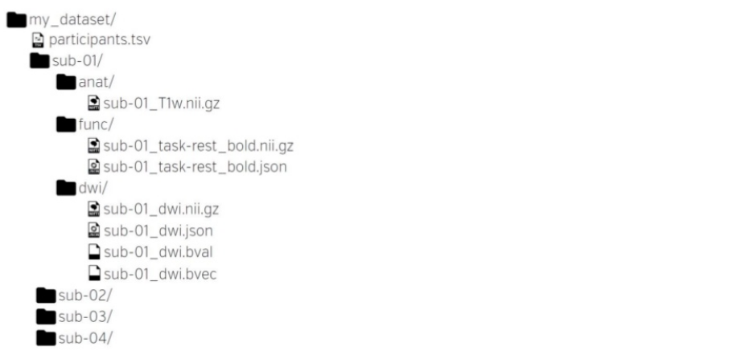

name: inverse layout: true class: center, middle, inverse --- # Data management and sharing ### ~1,5 h --- name: content class: center, middle layout: false ## Roadmap ### [Data and BIDS](#datamanage) ### [BIDS converters](#heudiconv) ### [BIDS apps](#bidsapps) ### [neurodocker](#neurodocker) ### [neurovault and openneuro](#cloudsystems) ### [git](#git) ### [datalad](#datalad) ### [but why?](#benefits) --- name: content layout: false name: intro ## introduction data management: - How do you manage your data? -- - everyone uses different methods, approaches or even programs - data management includes: storage, structure, meta data, version control, ... -- data sharing: - Do you share your data and if so, how? -- - data sharing is crucial for science, no matter if on a small (local colleagues) or large scale (openly on the web) - data sharin become more and more mandatory, journals and funding agencies demand the (raw) data to be publicly available (if you like it or not, but trust us: it's easy, doesn't mean any harm and is the right thing to do) -- combining both we'll ease up your lab life and further increase the credibility of (neuro)science! --- name: intro2 ## data and BIDS as mentioned before everyone uses different approaches, but the thing is that heterogenetiy in data management causes problems and incoveniences: -- - it's hard for others to understand and get the gist of your data and keep track of changes, etc. (even for you sometimes) -- - unnecessary meta data input -- - codes / scripts have to be adapted -- - hugh effort to automate workflows and no way to automatically validate data sets -- - sharing data becomes a hustle Are we doomed, forced to live in a world of uncurated and unloved data sets? Well, worry no more - BIDS to the rescue! --- name: datamanage ## data and BIDS ### BIDS - Brain Imaging Data Structure --> a new standard for organizing human neuroimaging datasets -- - principles 1. adoption is crucial 2. don't reinvent the wheel 3. 80/20 rule -- - who should use it? 1. lab PIs - it will make handling over one dataset from one student/postdoc to another super easy 2. workflow developers - it's very easy to write and extend pipelines expecting a particular file organization 3. database curators - accepting one data format eases up curation big time -- 4. YOU --- name: datamanage2 ## data and BIDS ### BIDS - Brain Imaging Data Structure --> dataset structure <img src="images/data2bids.jpg" width="100%" /> .right[*Gorgolewski, K. J. et al. 2016*] --- name: datamanage3 ## data and BIDS ### BIDS - Brain Imaging Data Structure --> WHAT'S IN THAT BOX ? Sorry, dataset...  .right[*Gorgolewski, K. J. et al. 2016*] --- name: datamanage4 ## data and BIDS ### BIDS - Brain Imaging Data Structure --> WHAT'S IN THAT BOX ? Sorry, dataset... - participant information <img src="images/bids_structure_part.png" width="100%" /> .right[*Gorgolewski, K. J. et al. 2016*] --- name: datamanage4 ## data and BIDS ### BIDS - Brain Imaging Data Structure --> WHAT'S IN THAT BOX ? Sorry, dataset... - neuroimaging files <img src="images/bids_structure_nifti.png" width="100%" /> .right[*Gorgolewski, K. J. et al. 2016*] --- name: datamanage5 ## data and BIDS ### BIDS - Brain Imaging Data Structure --> WHAT'S IN THAT BOX ? Sorry, dataset... - sequence specific .json files <img src="images/bids_structure_json.png" width="100%" /> .right[*Gorgolewski, K. J. et al. 2016*] --- name: datamanage6 ## data and BIDS ### BIDS - Brain Imaging Data Structure --> getting in shape (your data, not you) -- - two general possibilities: -- 1. data already converted and no access to DICOMS - well, shit happens, eh? - write a code snippet that reorganizes and renames the data or do it the old fashioned way (copy / paste) -- 2. data already converted and still access to DICOMS OR data didn't converted from DICOM yet - coolio, both cases are very well suited for the application of a BIDS converter - this is the preferred case, as BIDS converters extract a vast amount of important metadata --- name: heudiconv ## data and BIDS ### BIDS - Brain Imaging Data Structure --> getting in shape using BIDS converters: - [AFNI BIDS-tools](https://github.com/nih-fmrif/bids-b0-tools) - [BIDS2ISATab](https://github.com/INCF/BIDS2ISATab) - [BIDSto3col](https://github.com/INCF/bidsutils/tree/master/BIDSto3col) - [BIDS2NDA](https://github.com/INCF/BIDS2NDA) - [bidskit](https://github.com/jmtyszka/bidskit) - [dac2bids](https://github.com/dangom/dac2bids) - [Dcm2Bids](https://github.com/cbedetti/Dcm2Bids) - [DCM2NIIx](https://github.com/neurolabusc/dcm2niix) - [DICM2NII](https://de.mathworks.com/matlabcentral/fileexchange/42997-dicom-to-nifti-converter--nifti-tool-and-viewer) - [HeuDiConv](https://github.com/nipy/heudiconv) - [OpenfMRI2BIDS](https://github.com/INCF/openfmri2bids) - [ReproIn](https://github.com/ReproNim/reproin)(HeuDiConv-based turnkey solution) - [bids2xar](https://github.com/lwallace23/bids2xar)(for XNAT import) - [XNAT2BIDS](https://github.com/kamillipi/2bids) - [Horos (Osirix) export plugin](https://github.com/mslw/horos-bids-output) --- name: heudiconv2 ## data and BIDS ### BIDS - Brain Imaging Data Structure --> we're gonna focus and try [HeuDiConv](https://github.com/nipy/heudiconv) <img src="images/heudiconv.png" width="100%" /> -- - getting [HeuDiConv](https://github.com/nipy/heudiconv) - with docker it's as easy as docker pull nipy/heudiconv:latest` - without it, you'll need theses requirements: [`python 2.7`](https://www.python.org/downloads/release/python-2714/), [`nipype`](http://nipype.readthedocs.io/en/latest/), [`dcmtack`](https://github.com/moloney/dcmstack), [`dcm2niix`](https://github.com/rordenlab/dcm2niix) --- name: heudiconv3 .left-column[ ## Hands On ## [HeuDiConv](https://github.com/nipy/heudiconv) ### ~10min ] .right-column[ Prerequisites: - `docker pull nipy/heudiconv:latest` - `jupyter notebook` (for nice viewing) - grab the data using `datalad` (more to that later) ``` $ docker run -it --rm -v /path/to/store/dicoms:/data --entrypoint=bash nipy/heudiconv:latest # Inside container > source activate neuro && cd /data > git clone http://datasets.datalad.org/dicoms/dartmouth-phantoms/PHANTOM1_3/.git > cd PHANTOM1_3 > datalad get -J6 YAROSLAV_DBIC-TEST1/ #ensure all the data is downloaded for the demo to work! > exit ``` Please open this presentation on your machine to follow the hands on (for easy copy / paste). ] --- name: conversion ### Sample conversion Start out running heudiconv without any converter, just passing in DICOMs. ```bash docker run --rm -it -v /path/to/dicoms:/data:ro -v /path/to/output/directory:/output nipy/heudiconv:latest ``` --- ### Sample conversion Start out running heudiconv without any converter, just passing in DICOMs. ```bash docker run --rm -it -v /path/to/dicoms:/data:ro -v /path/to/output/directory:/output nipy/heudiconv:latest \ -d /data/{subject}/YAROSLAV_DBIC-TEST1/*/*/*IMA -s PHANTOM1_3 ``` --- ### Sample conversion Start out running heudiconv without any converter, just passing in DICOMs. ```bash docker run --rm -it -v /path/to/dicoms:/data:ro -v /path/to/output/directory:/output nipy/heudiconv:latest \ -d /data/{subject}/YAROSLAV_DBIC-TEST1/*/*/*IMA -s PHANTOM1_3 \ -f /src/heudiconv/heuristics/convertall.py -c none -o /output ``` --- layout: false ### Sample conversion Once run, you should now have a directory with your subject, and a sub-directory `.heudiconv`. - Within `.heudiconv`, there will be a directory with your subject ID, and a subdirectory `info`. Inside this, you can see a `dicominfo.tsv` - we'll be using the information here to convert to a file structure (BIDS) - The full specifications for BIDS can be found [here](http://bids.neuroimaging.io/bids_spec1.0.1.pdf) --- ### The heuristic file ```python import os def create_key(template, outtype=('nii.gz',), annotation_classes=None): if template is None or not template: raise ValueError('Template must be a valid format string') return template, outtype, annotation_classes def infotodict(seqinfo): """Heuristic evaluator for determining which runs belong where allowed template fields - follow python string module: item: index within category subject: participant id seqitem: run number during scanning subindex: sub index within group """ data = create_key('run{item:03d}') info = {data: []} for s in seqinfo: info[data].append(s.series_id) return info ``` --- ### Creating heuristic keys - Keys define type of scan - Let's extract T1, diffusion, and rest scans -- ex. ```python t1w = create_key('sub-{subject}/anat/sub-{subject}_T1w') ``` -- ```python def infotodict(seqinfo): """Heuristic evaluator for determining which runs belong where allowed template fields - follow python string module: item: index within category subject: participant id seqitem: run number during scanning subindex: sub index within group """ # paths done in BIDS format t1w = create_key('sub-{subject}/anat/sub-{subject}_T1w') dwi = create_key('sub-{subject}/dwi/sub-{subject}_run-{item:01d}_dwi') rest = create_key('sub-{subject}/func/sub-{subject}_task-rest_rec-{rec}_run-{item:01d}_bold') info = {t1w: [], dwi: [], rest: []} ``` --- ### Sequence Info - And now for each key, we will look at the `dicominfo.tsv` and set a unique criteria that only that scan will meet. -- ```python for idx, s in enumerate(seqinfo): # s is a namedtuple with fields equal to the names of the columns # found in the dicominfo.txt file ``` --- ### Sequence Info - And now for each key, we will look at the `dicominfo.tsv` and set a unique criteria that only that scan will meet. ```python for idx, s in enumerate(seqinfo): # each row of dicominfo.tsv if (sl == 176) and (s.dim4 == 1) and ('t1' in s.protocol_name): info[t1w] = [s.series_id] # assign if a single scan meets criteria ``` --- ### Handling multiple runs ```python for idx, s in enumerate(seqinfo): # each row of dicominfo.tsv if (s.dim3 == 176) and (s.dim4 == 1) and ('t1' in s.protocol_name): info[t1w] = [s.series_id] # assign if a single scan meets criteria ``` -- - Notice there are two diffusion scans shown in DICOM info --- ### Handling multiple runs ```python for idx, s in enumerate(seqinfo): # each row of dicominfo.txt if (s.dim3 == 176) and (s.dim4 == 1) and ('t1' in s.protocol_name): info[t1w] = [s.series_id] # assign if a single scan meets criteria if (11 <= s.dim3 <= 22) and (s.dim4 == 1) and ('dti' in s.protocol_name): info[dwi].append(s.series_id) # append if multiple scans meet criteria ``` - Notice there are two diffusion scans shown in DICOM info --- ### Using custom formatting conditionally ```python for idx, s in enumerate(seqinfo): # each row of dicominfo.tsv if (s.dim3 == 176) and (s.dim4 == 1) and ('t1' in s.protocol_name): info[t1w] = [s.series_id] # assign if a single scan meets criteria if (11 <= s.dim3 <= 22) and (s.dim4 == 1) and ('dti' in s.protocol_name): info[dwi].append(s.series_id) # append if multiple scans meet criteria ``` -- - Extract and label if resting state scans are motion corrected --- ### Using custom formatting conditionally ```python for idx, s in enumerate(seqinfo): # each row of dicominfo.tsv if (s.dim3 == 176) and (s.dim4 == 1) and ('t1' in s.protocol_name): info[t1w] = [s.series_id] # assign if a single scan meets criteria if (11 <= s.dim3 <= 22) and (s.dim4 == 1) and ('dti' in s.protocol_name): info[dwi].append(s.series_id) # append if multiple scans meet criteria if (s.dim4 > 10) and ('taskrest' in s.protocol_name): if s.is_motion_corrected: # motion corrected # catch else: # catch ``` - Extract and label if resting state scans are motion corrected --- ### Using custom formatting conditionally ```python for idx, s in enumerate(seqinfo): # each row of dicominfo.tsv if (s.dim3 == 176) and (s.dim4 == 1) and ('t1' in s.protocol_name): info[t1w] = [s.series_id] # assign if a single scan meets criteria if (11 <= s.dim3 <= 22) and (s.dim4 == 1) and ('dti' in s.protocol_name): info[dwi].append(s.series_id) # append if multiple scans meet criteria if (s.dim4 > 10) and ('taskrest' in s.protocol_name): if s.is_motion_corrected: # motion corrected info[rest].append({'item': s.series_id, 'rec': 'corrected'}) else: info[rest].append({'item': s.series_id, 'rec': 'uncorrected'}) ``` - Extract and label if resting state scans are motion corrected --- ### Our finished heuristic (`phantom_heuristic.py`) ```python import os def create_key(template, outtype=('nii.gz',), annotation_classes=None): if template is None or not template: raise ValueError('Template must be a valid format string') return template, outtype, annotation_classes def infotodict(seqinfo): t1w = create_key('sub-{subject}/anat/sub-{subject}_T1w') dwi = create_key('sub-{subject}/dwi/sub-{subject}_run-{item:01d}_dwi') rest = create_key('sub-{subject}/func/sub-{subject}_task-rest_rec-{rec}_run-{item:01d}_bold') info = {t1w: [], dwi: [], rest: []} for s in seqinfo: if (s.dim3 == 176) and (s.dim4 == 1) and ('t1' in s.protocol_name): info[t1w] = [s.series_id] # assign if a single series meets criteria if (11 <= s.dim3 <= 22) and (s.dim4 == 1) and ('dti' in s.protocol_name): info[dwi].append(s.series_id) # append if multiple series meet criteria if (s.dim4 > 10) and ('taskrest' in s.protocol_name): if s.is_motion_corrected: # exclude non motion corrected series info[rest].append({'item': s.series_id, 'rec': 'corrected'}) else: info[rest].append({'item': s.series_id, 'rec': 'uncorrected'}) return info ``` --- ### Changing our docker command ```bash docker run --rm -it -v /path/to/dicoms:/data:ro -v /path/to/output/directory:/output nipy/heudiconv:latest \ -d /data/{subject}/YAROSLAV_DBIC-TEST1/*/*/*IMA -s PHANTOM1_3 \ -f /src/heudiconv/heuristics/convertall.py -c none -o /output ``` --- ### Changing our docker command ```bash docker run --rm -it -v /path/to/dicoms:/data:ro -v /path/to/output/directory:/output nipy/heudiconv:latest \ -d /data/{subject}/YAROSLAV_DBIC-TEST1/*/*/*IMA -s PHANTOM1_3 \ -f /data/phantom_heuristic.py -c none -o /output ``` --- ### Changing our docker command ```bash docker run --rm -it -v /path/to/dicoms:/data:ro -v /path/to/output/directory:/output nipy/heudiconv:latest \ -d /data/{subject}/YAROSLAV_DBIC-TEST1/*/*/*IMA -s PHANTOM1_3 \ -f /data/phantom_heuristic.py -c dcm2niix -o /output ``` --- ### Updated docker command ```bash docker run --rm -it -v /path/to/dicoms:/data:ro -v /path/to/output/directory:/output nipy/heudiconv:latest \ -d /data/{subject}/YAROSLAV_DBIC-TEST1/*/*/*IMA -s PHANTOM1_3 \ -f /data/phantom_heuristic.py -c dcm2niix -b -o /output ``` -- - Clear old output directory - Run the docker command! - Something missing? Double check your `heuristic` and `dicominfo.tsv`! --- name: extrasteps ## data and BIDS ### BIDS - Brain Imaging Data Structure --> Is it BIDS yet? Let's check using the [BIDS-validator](http://incf.github.io/bids-validator): - [web validator](http://incf.github.io/bids-validator/) - open [Google Chrome](https://www.google.com/chrome/) or [Mozilla Firefox](https://www.mozilla.org/en-US/firefox/new/) (currently the only supported browsers) - Go to [http://incf.github.io/bids-validator/](https://github.com/INCF/bids-validator) and select a folder with your BIDs dataset. If the validator seems to be working longer than couple of minutes please open [developer tools](https://developer.chrome.com/devtools) and report the error at [https://github.com/INCF/bids-validator/issues](https://github.com/INCF/bids-validator/issues) - command line version - package - install [node.js](https://nodejs.org/en/) - get the bids-validator package using `pip` : `pip install -g bids-validator` & then run it to validate your dataset - command line version - docker - get the docker image: `docker pull bids/validator` - run `docker run -ti --rm -v /path/to/data:/data:ro bids/validator /data` --- name: nowwhat ### Now what? #### That sounds cool and fancy, but how to make use of BIDS? #### 1. BIDS apps <img src="images/bids-apps.png" width="75%" /> #### 2. pyBIDS - a Python API for working with BIDS datasets --- layout: true class: center, middle, inverse --- name: questions # Questions?